PUR-01 เพิ่มผู้ขายจริงของโรงงาน แล้วให้หัวหน้าจัดซื้อตั้งสถานะอนุมัติ
ระบบจัดซื้อ
เจ้าหน้าที่จัดซื้อเปิดเมนู จัดซื้อ › ผู้ขาย แล้วกดปุ่ม "เพิ่มผู้ขาย" มุมขวาบน

ช่อง "รหัสผู้ขาย *" ระบบเติมให้เอง (VND-2610-9707) ไม่ต้องแก้

กรอก "ชื่อผู้ขาย *", "ผู้ติดต่อ", "โทรศัพท์" และ "เลขประจำตัวผู้เสียภาษี" (13 หลัก)

กรอก "ระยะเวลานำส่ง (วัน)" เลือก "เงื่อนไขการชำระเงิน" และกรอก "ที่อยู่" — ไม่ติ๊ก "ผู้ขายที่ได้รับการอนุมัติ" (ให้หัวหน้าจัดซื้อเป็นคนอนุมัติ)

กด "บันทึกผู้ขาย" ระบบเปิดหน้าผู้ขายรายนี้ สถานะ "รออนุมัติ"

ออกจากระบบ แล้วเข้าด้วยบัญชีหัวหน้าจัดซื้อ เปิดผู้ขายรายนี้

กดไอคอนดินสอ "แก้ไข" ที่ส่วน "สถานะ" ติ๊ก "ผู้ขายที่อนุมัติแล้ว"

กด "บันทึกการเปลี่ยนแปลง" สถานะเปลี่ยนเป็น "อนุมัติแล้ว"

กลับหน้าทะเบียนผู้ขาย พิมพ์ชื่อผู้ขายในช่องค้นหา แล้วกดแท็บ "อนุมัติแล้ว" — เจอผู้ขายรายนี้ (ถ้ากดแท็บ "รออนุมัติ" จะไม่เจอ)

PUR-02 ออกใบขอซื้อวัตถุดิบสมุนไพร 2 รายการ แล้วส่งขออนุมัติ
ระบบจัดซื้อ
เจ้าหน้าที่จัดซื้อ (บัญชีที่ผูกกับพนักงานแล้ว) เปิด จัดซื้อ › ใบขอซื้อ แล้วกด "สร้าง PR"

เลือก "ความสำคัญ" (เร่งด่วน) และ "วันที่ต้องการ *" จากปฏิทิน

เลือก "บริษัทผู้ขาย (ถ้าระบุ)" และกรอก "เหตุผลในการขอซื้อ"

ส่วน "รายการสินค้า *" กด "เลือกจากคลังสินค้า" ติ๊กสินค้าที่ต้องการ แล้วกด "เพิ่มที่เลือก (2)"

ใส่ "จำนวน" และ "ราคาต่อหน่วย" ทุกแถว ตรวจ "หน่วยนับ" ระบบรวมยอดให้

กด "บันทึกร่าง" ระบบออกเลขที่ใบขอซื้อให้ สถานะ "ร่าง"

กด "ส่งขออนุมัติ" ระบบถามยืนยันในหน้าต่าง "ยืนยันการส่งขออนุมัติ"

กดยืนยัน สถานะเปลี่ยนเป็น "รออนุมัติ" และแก้ไขรายการไม่ได้แล้ว

สร้างใบขอซื้อใบที่ 2 แบบเดียวกัน (ขมิ้นชันผง 10 กก. ความสำคัญ ปกติ) แล้วส่งขออนุมัติ — ใบนี้ใช้ทดสอบ "ปฏิเสธ" ใน PUR-03

PUR-03 อนุมัติใบขอซื้อใบที่ 1 และไม่อนุมัติใบที่ 2 พร้อมเหตุผล ลองให้ผู้ขอซื้ออนุมัติใบของตนเอง
ระบบจัดซื้อ
ผู้ขอซื้อเปิดใบขอซื้อของตนเองที่ "รออนุมัติ" — ไม่มีปุ่ม "อนุมัติ" และมีข้อความ "ใบขอซื้อนี้คุณเป็นผู้สร้าง — ต้องให้ผู้อื่นอนุมัติ"

ออกจากระบบ แล้วเข้าด้วยบัญชีหัวหน้าจัดซื้อ เปิด จัดซื้อ › ใบขอซื้อ แท็บ "รออนุมัติ"

เปิดใบที่ 1 (ขิงผง / ไพลผง) กด "อนุมัติ" ใส่ "ความคิดเห็น (ไม่บังคับ)"

กด "อนุมัติ" ในหน้าต่าง สถานะเปลี่ยนเป็น "อนุมัติแล้ว"

เปิดใบที่ 2 (ขมิ้นชันผง 10 กก.) กด "ปฏิเสธ" — ปุ่มยืนยันยังกดไม่ได้จนกว่าจะกรอกเหตุผล

กรอก "เหตุผลในการปฏิเสธ"

กด "ปฏิเสธ" สถานะเปลี่ยนเป็น "ไม่อนุมัติ"

ดูส่วน "ผู้ดำเนินการ / ประวัติการอนุมัติ" — เรียงตามเวลา สร้าง → ส่งขออนุมัติ → ปฏิเสธ พร้อมชื่อผู้ทำและเหตุผล

ผู้ขอซื้อเข้าระบบ เปิดการแจ้งเตือน เห็น "ถูกตีกลับ — ใบขอซื้อ …" ของใบที่ 2

PUR-04 แปลงใบขอซื้อเป็นใบสั่งซื้อ ส่งอนุมัติ อนุมัติ และพิมพ์
ระบบจัดซื้อ
พนักงานจัดซื้อ (เจ้าหน้าที่จัดซื้อ) เมนู จัดซื้อ › ใบขอซื้อ › แท็บ "อนุมัติแล้ว" — เห็น 2 ใบ (PR2026-0001 ของโรงงาน, PR2026-0002 ใบซ้อม) คอลัมน์ "รายละเอียด" เป็น "-" ทั้งคู่ ต้องเปิดดูเหตุผลทีละใบ

คลิก PR2026-0002

กด "แปลงเป็นใบสั่งซื้อ" → ระบบเปิด PO2026-0001 สถานะ "ร่าง" ยอด 20,330.00 (ก่อน VAT 19,000 · VAT 1,330)

แท็บ "ข้อมูลคำสั่งซื้อ" กด "แก้ไขข้อมูล" — ผู้ขายถูก · วันที่คาดว่าจะได้รับ 21/10/2569 เติมมาจากใบขอซื้อ · ฐานราคา = ก่อน VAT · กด "บันทึก"

ตรวจรายการ: ขิงผง 50 × 180 = 9,000 · ไพลผง 40 × 250 = 10,000 · ยอดสินค้า 19,000 · VAT 7% 1,330 · ยอดสุทธิ 20,330 ถูกต้อง

กด "ส่งอนุมัติ" → กล่องยืนยันของเบราว์เซอร์ "ต้องการส่ง PO PO2026-0001 เพื่อขออนุมัติ?" กดตกลง → สถานะ "รออนุมัติ" · พนักงานจัดซื้อ ไม่เห็นปุ่ม "อนุมัติ"

หัวหน้าจัดซื้อ (หัวหน้าจัดซื้อ) เปิด PO2026-0001 เห็นปุ่ม "อนุมัติ"/"ปฏิเสธ" กด "อนุมัติ" → ยืนยัน "ยืนยันอนุมัติ PO PO2026-0001?" → สถานะ "อนุมัติแล้ว"

กด "พิมพ์" → ใบพิมพ์ A4 1 หน้า หัว "ใบสั่งซื้อ / PURCHASE ORDER" ตัวอักษร "(สองหมื่นสามร้อยสามสิบบาทถ้วน)" ช่องลงนาม ผู้จัดทำ / ผู้ตรวจสอบ / ผู้อนุมัติ — หัวกระดาษยังเป็น "ยูเอทีจำกัด / UAT Co.Ltd"
กด "รับสินค้าเข้าคลัง" → แท็บ "รับสินค้า" "คงเหลือรอรับ 90 kg" ปุ่ม "รับสินค้า" ทั้ง 2 รายการกดได้ (ยังไม่รับ)

เปิด PR2026-0002 อีกครั้ง สถานะ "แปลงเป็น PO" · "แปลงเป็นใบสั่งซื้อ: PO2026-0001"

PUR-05 รับสินค้าตามใบสั่งซื้อ รายการแรกครบ รายการที่สองบางส่วน
ระบบจัดซื้อ
พนักงานคลัง เปิด จัดซื้อ › ใบสั่งซื้อ › PO2026-0001 กด "รับสินค้าเข้าคลัง" → แท็บ "รับสินค้า"

บรรทัด ขิงผง กด "รับสินค้า" → กล่อง สั่งซื้อ 50 / รับแล้ว 0 / คงเหลือ 50 · "จำนวนที่รับ *" เติม 50 ให้ · เลือก "คลังสินค้า *" · "เลขล็อตผู้ขาย *" = ซ้อม-LOT-6910-01 · "วันผลิต *" 01/10/2569 · "วันหมดอายุ *" 30/09/2571 (ช่องวันที่พิมพ์ไม่ได้ ต้องกดเลือกจากปฏิทิน วันหมดอายุ 2 ปีข้างหน้าต้องกดเลื่อนเดือนหลายครั้ง) · "เลขล็อตระบบ" ขึ้นเอง RN-RM-003-LOT-20261013-001 · ปุ่ม "ยืนยันรับสินค้า" ยังกดไม่ได้

ติ๊ก "รายการตรวจรับ" ทุกข้อ (ใบส่งของหรือใบแจ้งหนี้ * · มี COA (ถ้ามี) · ตรวจวันผลิต/วันหมดอายุ * · ภาชนะบรรจุสะอาด * · ฉลาก * · มี COA *) → ปุ่มกดได้

ครั้งแรกเลือกคลัง "WH-RM - Raw Material Warehouse" แล้วกดยืนยัน → ระบบแจ้ง "ไม่พบคลังสินค้าที่เลือก หรือคลังนี้ปิดใช้งานแล้ว" (รายการคลังมี 19 คลัง รวมคลังที่ปิดแล้ว) → เปลี่ยนเป็น "WH-RM-001 - คลังวัตถุดิบ" กดยืนยันอีกครั้ง รับได้

บรรทัดขิงผงขึ้น "ครบแล้ว"

บรรทัด ไพลผง กด "รับสินค้า" แก้ "จำนวนที่รับ *" เป็น 25 (สั่ง 40) ล็อตผู้ขาย ซ้อม-LOT-6910-02 วันผลิต 05/10/2569 วันหมดอายุ 04/10/2571 ติ๊กครบ กด "ยืนยันรับสินค้า"

กด "รับสินค้า" ไพลผงอีกครั้ง ช่องจำนวนเติม 15 พิมพ์ 20 แล้วช่องกลับเป็น 15 (รับเกินไม่ได้) กด "ยกเลิก"

การ์ด สั่งซื้อ 90 kg · รับแล้ว 75 kg · คงเหลือ 15 kg · ความคืบหน้า 83% · สถานะใบ "รับบางส่วน" · "คงเหลือรอรับ 15 kg"

แท็บ "ล็อตที่รับ (2)" : RN-RM-003-LOT-20261013-001 50 กักกัน · RN-RM-004-LOT-20261013-001 25 กักกัน · ใบตรวจรับ GRN-2026-00081 ทั้งคู่ · รายการบัญชี JV-202610-000005 / 000006

แท็บ "ข้อมูลคำสั่งซื้อ" สถานะรายการ ขิงผง "รับครบ" · ไพลผง "รับบางส่วน" ค้างส่ง 15

PUR-06 ปฏิเสธการรับสินค้าที่ไม่ผ่านการตรวจรับ 1 รายการ พร้อมเหตุผล
ระบบจัดซื้อ
เจ้าหน้าที่จัดซื้อเปิดใบขอซื้อใบที่ 1 ที่อนุมัติแล้ว กด "แปลงเป็นใบสั่งซื้อ" ระบบเปิดใบสั่งซื้อสถานะ "ร่าง" ยอด 7,062.00 บาท (6,600 + VAT 462)

กด "ส่งอนุมัติ" แล้วตอบตกลงที่กล่องยืนยัน สถานะเป็น "รออนุมัติ"

หัวหน้าจัดซื้อเปิดใบสั่งซื้อนั้น กด "อนุมัติ" แล้วตอบตกลง สถานะเป็น "อนุมัติแล้ว"

พนักงานคลังเปิดแท็บ "รับสินค้า" รายการ ขิงผง กด "รับสินค้า" เลือกคลัง กรอกเลขล็อตผู้ขาย วันผลิต วันหมดอายุ

ตรวจพบหีบห่อชำรุด — ติ๊กข้ออื่นตามจริง แต่ไม่ติ๊กข้อ "บรรจุภัณฑ์ภายนอกสมบูรณ์ ไม่เสียหาย"

กรอก "เหตุผลการปฏิเสธ (กรอกถ้าจะไม่รับ)" — ปุ่ม "ปฏิเสธ / ไม่รับของ" กดได้ทันที

กด "ปฏิเสธ / ไม่รับของ" ระบบแจ้ง "ปฏิเสธการรับและบันทึกรายงานความเบี่ยงเบนแล้ว (DEV-…)" — ไม่เกิดล็อต รายการยังเป็น "ยังไม่รับ"

ที่รายการขิงผงมีลิงก์ "ปฏิเสธการรับ DEV-2026-44286"

QA เปิด ควบคุมคุณภาพ › ความเบี่ยงเบน ค้นเลข DEV เดียวกัน — ประเภท "ตรวจรับสินค้าไม่ผ่าน" สถานะ "เปิด"

PUR-07 เปิดประวัติการซื้อของผู้ขาย แดชบอร์ดจัดซื้อ และรายงานการจัดซื้อ แล้วส่งออก Excel
ระบบจัดซื้อ
จัดซื้อ › ผู้ขาย เปิดผู้ขายรายนั้น ดูแท็บ "ภาพรวม"

กดแท็บ "ใบสั่งซื้อ" เห็นใบสั่งซื้อของผู้ขายนี้ พร้อมยอดและสถานะ

จัดซื้อ › แดชบอร์ด ดูการ์ด "ยอดสั่งซื้อ", "ค้างรับ", "ผลตรวจรับเข้า" และตาราง "ใบสั่งซื้อที่เลยกำหนดรับ"

จัดซื้อ › รายงานการจัดซื้อ ใส่ "ตั้งแต่วันที่" 14/10/2569 และ "ถึงวันที่" 21/10/2569

ดูส่วน "แยกตามสถานะ" และ "ผู้ขายสูงสุด" ยอดตรงกับเอกสารที่ทำ

กด "ส่งออก Excel" ได้ไฟล์ purchase-report-2026-10-16.xlsx ในไฟล์มีชีต "สรุป", "ตามสถานะ", "ตามคู่ค้า", "รายละเอียด"

QC-01 ลงนามรายการตรวจรับเพื่อสร้างใบตัวอย่าง แล้วใส่รายการทดสอบตามชุดการทดสอบ
ระบบควบคุมคุณภาพ
ผู้วิเคราะห์ QC เปิด ควบคุมคุณภาพ › บันทึก QC การ์ดสีส้ม "รอลงทะเบียน QC" 2 รายการ (ไพลผง/ขิงผง ป้าย "ใบสั่งซื้อ" GRN-2026-00081)

คลิก ขิงผง → เปิดหน้าใบรับสินค้า GRN-2026-00081

บรรทัด ขิงผง กด "ลงนามรายการตรวจรับ" → ช่อง "สุ่มนำมาวิเคราะห์ (เข้าคลัง QC) *" ระบบเติม 9 ให้ (สูตร √n+1) แก้เป็น 0.2 · ติ๊กรายการตรวจรับ 6 ข้อ · ใส่ "รหัสผ่าน" · กด "ลงนามรายการตรวจรับ"

ขึ้น "ลงนามรายการตรวจรับเรียบร้อย — สร้างล็อตและตัวอย่าง QC แล้ว" บรรทัดเป็น "รอ QC"

ทำซ้ำบรรทัด ไพลผง (สุ่ม 0.2) — ขึ้นข้อความเดียวกัน
กลับ บันทึก QC ค้น "ซ้อม-LOT-6910" → QC-2026-0001 (ขิงผง) และ QC-2026-0002 (ไพลผง) สถานะ "ลงทะเบียน" · การ์ด "รอลงทะเบียน QC" หายไป

เปิด QC-2026-0001 การ์ด "ที่มาของตัวอย่าง" = วัตถุดิบเข้า · ใบรับ GRN-2026-00081 แถว 1 · "เลขที่ล็อต" = ซ้อม-LOT-6910-01 (เลขล็อตผู้ขาย) · จำนวน 0.2 kg

กด "ใช้ชุดการทดสอบ" คลิกช่อง "เลือกชุดการทดสอบ" เลือกทั้ง 2 รายการ กด "เพิ่มรายการทดสอบ" → "ใช้ชุดการทดสอบสำเร็จ เพิ่ม 2 รายการ"

ได้หัวข้อ RN-ความชื้น "ไม่เกิน 10.0 %" และ RN-เถ้ารวม "ไม่เกิน 8.0 %" · ทำซ้ำกับ QC-2026-0002

QC-02 บันทึกผลตรวจ 2 ล็อต (ล็อตแรกผ่านทุกหัวข้อ ล็อตที่สองความชื้นเกิน)
ระบบควบคุมคุณภาพ
ผู้วิเคราะห์ QC เปิด QC-2026-0001 กด "เริ่มทดสอบ" → "เปลี่ยนสถานะแล้ว ลงทะเบียน → กำลังทดสอบ"
คลิกหัวการ์ด RN-ความชื้น ใส่ 8.2

กด "บันทึก" → "บันทึกแล้ว รอบที่ 1 — ผล: ผ่าน" ป้าย "ผ่าน" "✓ ในเกณฑ์"

คลิกการ์ด RN-เถ้ารวม ใส่ 6.5 กด "บันทึก" → "รอบที่ 1 — ผล: ผ่าน"

เปิด QC-2026-0002 กด "เริ่มทดสอบ" · การ์ด RN-ความชื้น ใส่ 11.8 กด "บันทึก" → "รอบที่ 1 — ผล: ไม่ผ่าน" และ "ผลทดสอบ ไม่ผ่าน — กำลังเปิดฟอร์มความเบี่ยงเบน"

ระบบพาไปหน้า "ความเบี่ยงเบน" ที่เติมหัวข้อ/รายละเอียด/ล็อตให้แล้ว → กดย้อนกลับของเบราว์เซอร์ ไม่บันทึก

การ์ด RN-เถ้ารวม ใส่ 7.1 กด "บันทึก" → "ผ่าน" · หน้าตัวอย่างขึ้นส่วน "สอบสวน OOS + เปิดสอบสวน OOS"

กลับทะเบียน บันทึก QC ค้น "ซ้อม-LOT-6910": QC-2026-0002 "กำลังทดสอบ" คอลัมน์การทดสอบ "2/2 · 1 ไม่ผ่าน" · QC-2026-0001 "กำลังทดสอบ" 2/2

QC-03 ลงนามอิเล็กทรอนิกส์ 4 ระดับ ลองให้ผู้วิเคราะห์ลงนามทบทวนเอง แล้วคลังปล่อยล็อตเข้าคลัง
ระบบควบคุมคุณภาพ
ผู้วิเคราะห์ QC แถว "ผู้ทดสอบ" กด "ลงนาม" → หน้าต่าง "ลงนาม — ผู้ทดสอบ" ใส่ "รหัสผ่าน (ต้องกรอก)" กด "ลงนาม" → "ลงนามสำเร็จ"

กด "ส่งทบทวน" หัวข้อความชื้น แล้วหัวข้อเถ้ารวม → กล่องยืนยันของเบราว์เซอร์ "ตัดสินครบทุกหัวข้อแล้ว — ส่งทบทวนทั้งใบตัวอย่างเลยหรือไม่?" (ครั้งแรกกดยกเลิก แล้วกดปุ่ม "ส่งทบทวน" ด้านบนอีกครั้ง กดตกลง) → "กำลังทดสอบ → ทบทวนแล้ว"
ไม่มีปุ่ม "แก้ไขรอบที่ 1" / "ลบหัวข้อนี้" แล้ว (แต่ ผู้วิเคราะห์ QC เห็นปุ่ม "อนุมัติ / ขอตรวจซ้ำ / ปฏิเสธ" รายหัวข้อ — ไม่ได้กด)

ผู้วิเคราะห์ QC กด "ลงนาม" แถว "ผู้ทบทวน" ใส่รหัสผ่านตัวเอง → "ลงนามไม่สำเร็จ — แบ่งแยกหน้าที่: ผู้ทบทวนต้องเป็นคนละคนกับผู้ทดสอบ" กดยกเลิก

หัวหน้า QC (หัวหน้า QC) กด "อนุมัติ" หัวข้อแรก แล้วหัวข้อที่สอง → ยืนยัน "ตัดสินครบทุกหัวข้อแล้ว — อนุมัติทั้งใบตัวอย่างเลยหรือไม่?" → หน้าต่าง "ลงนาม — ผู้ทบทวน" เด้งขึ้นเอง ใส่รหัสผ่าน กด "ลงนาม"


หัวหน้า QA (หัวหน้า QA) กด "ลงนามอนุมัติ" ลงนาม → "ทบทวนแล้ว → อนุมัติแล้ว"

หัวหน้า QA กด "ปล่อยใช้งาน" → "ลงนาม — QA ปล่อยใช้งาน" ลงนาม → "อนุมัติแล้ว → ปล่อยใช้งานแล้ว" · ส่วน "การลงนาม" แสดงชื่อ เวลา และ ทดสอบแล้ว / ทบทวนแล้ว / อนุมัติแล้ว / ปล่อยใช้งานแล้ว · มีปุ่ม "ออก COA"

พนักงานคลัง (พนักงานคลัง) เมนู คลังสินค้า › ตรวจรับของ (GRN) เปิด GRN-2026-00081 บรรทัดขิงผง กด "ปล่อยเข้าคลัง" → "จำนวนรวมที่นับได้จริง *" 50 · "QC สุ่มไปแล้ว (เข้าคลัง QC): 0.2" · "เข้าคลัง วัตถุดิบ: 49.8" ใส่รหัสผ่าน กด "ปล่อยเข้าคลัง" → "ปล่อยเข้าคลังเรียบร้อย แถว 1 RN-RM-003 จำนวน 50 kg เข้าคลังแล้ว"


คลังสินค้า › ล็อต ค้น "RN-RM-003-LOT" → RN-RM-003-LOT-20261013-001 49.8 kg สถานะ "ปล่อยแล้ว"

PRM-01 บันทึกอุณหภูมิ/ความชื้นห้องเก็บ 3 ครั้ง (เกินเกณฑ์ 1 ครั้ง) แล้วรับทราบการแจ้งเตือน
ระบบอาคารสถานที่
พนักงานคลัง (พนักงานคลัง) กด "+ บันทึกค่า" เลือกคลัง → บรรทัด "เกณฑ์: 20.00–25.00°C / 45.00–65.00%RH" (คลังที่ไม่ได้ตั้งเกณฑ์ขึ้น "เกณฑ์: null–null°C / null–null%RH")
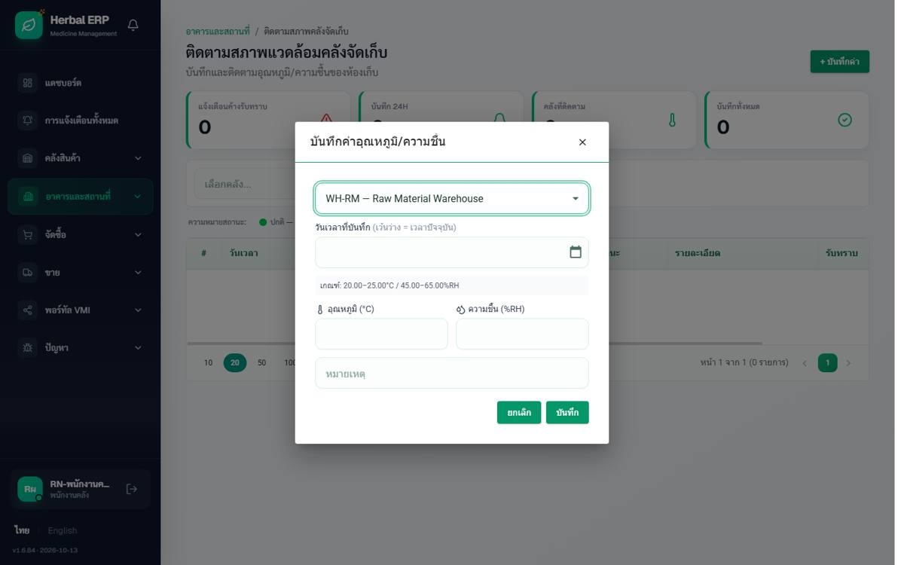
"วันเวลาที่บันทึก" เลือกจากปฏิทิน 13/10/2569 ตั้งเวลา 08:00 กด "ตกลง" · อุณหภูมิ 22.0 · ความชื้น 50 · กด "บันทึก" → "บันทึกเรียบร้อย — อยู่ในเกณฑ์"
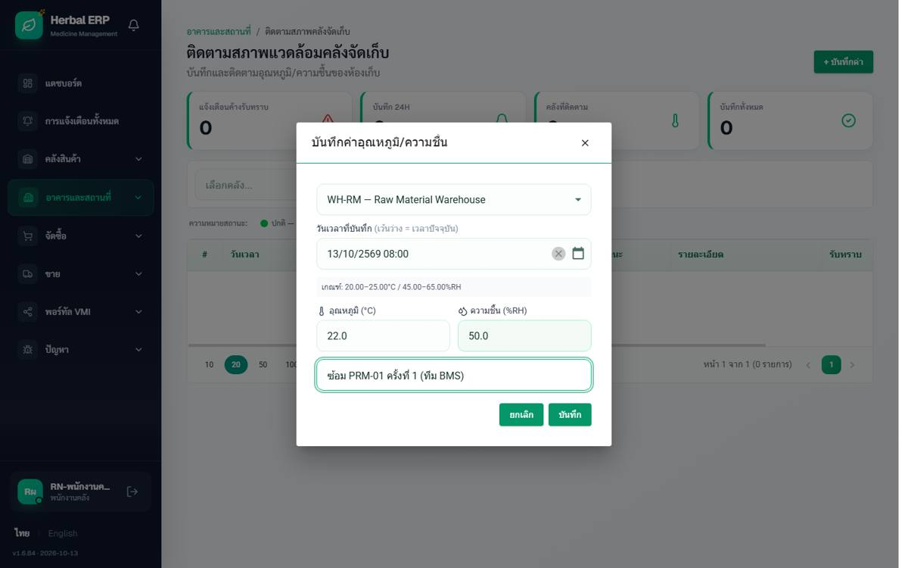
ครั้งที่ 2 เวลา 11:00 · 24.5 °C · 62 % → "บันทึกเรียบร้อย — อยู่ในเกณฑ์"
ครั้งที่ 3 เว้นวันเวลาว่าง · 32.5 °C · 72 % · หมายเหตุ "แอร์ห้องเก็บดับ" → ขึ้น "⚠ แจ้งเตือน — ⚠ หลายค่า: อุณหภูมิ 32.5°C สูงกว่าเกณฑ์ (25.00°C) / ความชื้น 72% สูงกว่าเกณฑ์ (65.00%)"

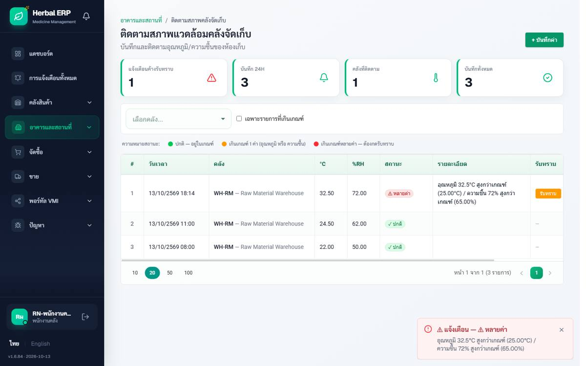
การ์ด "แจ้งเตือนค้างรับทราบ" = 1 · ติ๊ก "เฉพาะรายการที่เกินเกณฑ์" เหลือแถวเดียว สถานะ "⚠ หลายค่า"
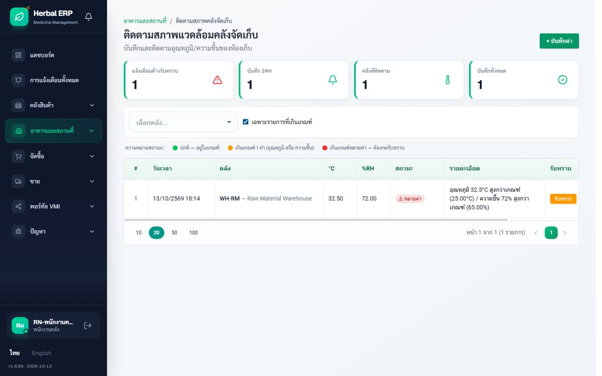
หัวหน้าคลัง (หัวหน้าคลัง) กด "รับทราบ" → กล่อง "ขั้นตอนถัดไปหลังรับทราบ:" กรอก "หมายเหตุ / การดำเนินการที่ทำ" กด "ยืนยันรับทราบ"

ขึ้น "รับทราบการแจ้งเตือนแล้ว" ช่องรับทราบเป็น "✓ RN-หัวหน้าคลัง ผู้ทดสอบ" การ์ดค้างรับทราบกลับเป็น 0

PRM-04 ลงทะเบียนเครื่องมือ บันทึกใบรับรองสอบเทียบพร้อมค่าอ่านรายจุด ตั้งเครื่องที่ 2 ให้เลยกำหนด
ระบบอาคารสถานที่
กด "เพิ่มอุปกรณ์" เว้นช่องรหัส · ประเภท "เครื่องมือ" · การใช้งาน "นอกไลน์ผลิต" · ชื่อ (EN) "Rehearsal Thermo-hygrometer 01 (ซ้อม)" · ชื่อ (TH) "ซ้อม-เครื่องวัดอุณหภูมิและความชื้นห้องผสม" · ห้อง B16 · กด "บันทึก" → "สร้างอุปกรณ์แล้ว"
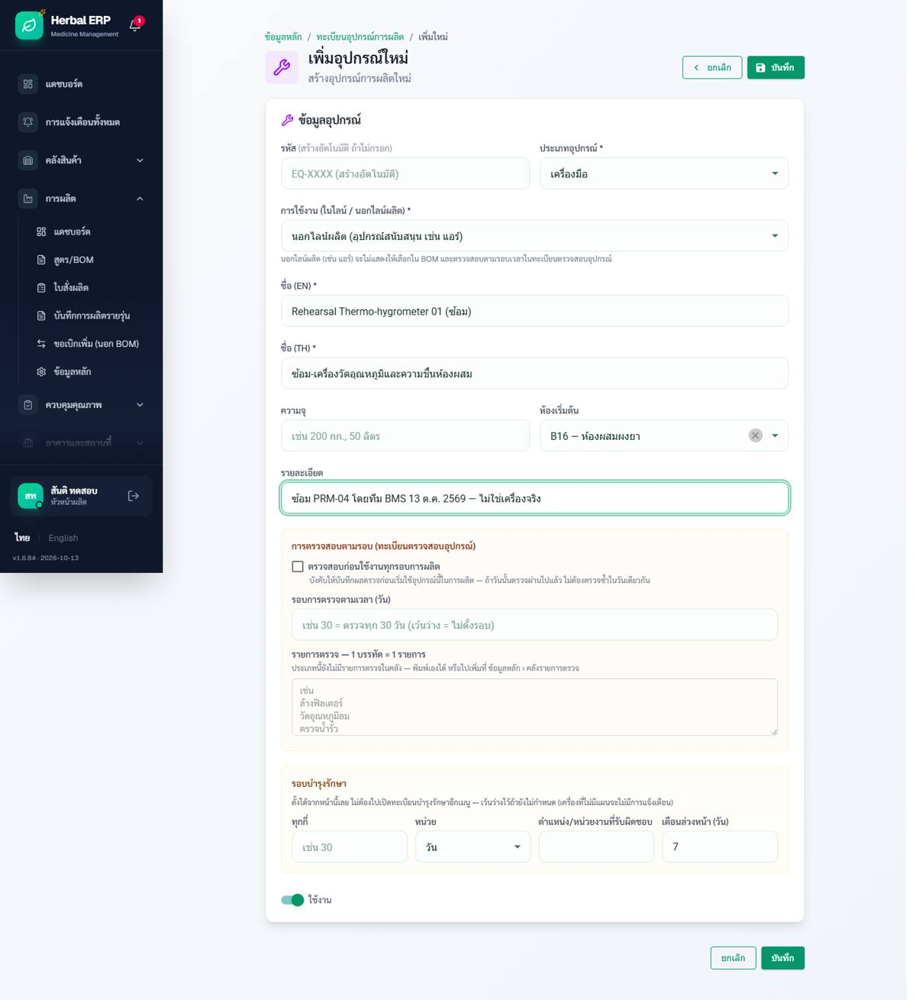
เพิ่มเครื่องที่ 2 "ซ้อม-เครื่องวัดความชื้นผงสมุนไพร" แบบเดียวกัน → ได้รหัส EQ-0003 และ EQ-0004

อาคารและสถานที่ › สอบเทียบ/บำรุงรักษา — ไม่มีแท็บ "สอบเทียบ" ให้เลือกเครื่องตรง ๆ ต้องกด "เพิ่มการบันทึกเอง" เลือกอุปกรณ์ EQ-0003 แล้วกดปุ่ม "สอบเทียบ"
"เลขที่ใบรับรอง *" ซ้อม-CAL-6910-01 · "วันที่สอบเทียบ *" 10/10/2569 · "วันหมดอายุใบรับรอง" 09/10/2570 (ทั้งสองช่องต้องกดเลือกจากปฏิทิน) · หน่วยงาน ซ้อม-ห้องปฏิบัติการสอบเทียบ · 25 °C / 55 % · "เกณฑ์ยอมรับ ±(%) *" แก้จาก 0.1 เป็น 1
"เพิ่มจุดวัด" 2 จุด: 20.0 → 20.1 = +0.500% ผ่าน · 30.0 → 30.2 = +0.667% ผ่าน · กด "บันทึกผลสอบเทียบ" → "บันทึกใบรับรองสอบเทียบแล้ว"
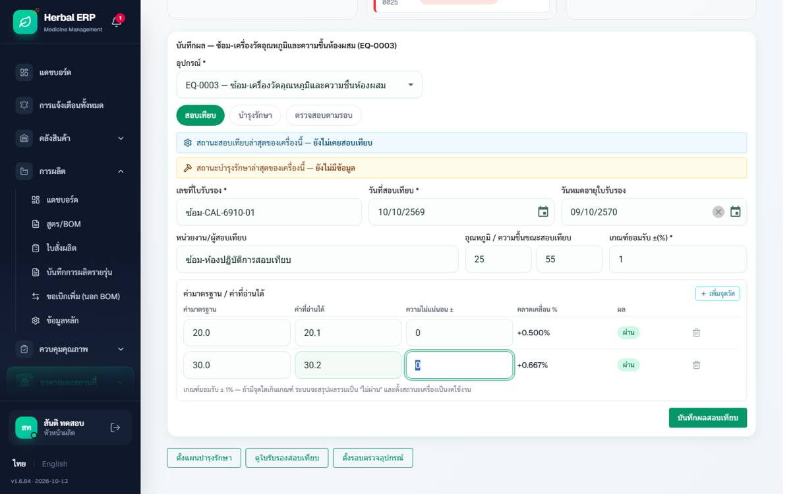
EQ-0004 ใบรับรอง ซ้อม-CAL-6810-02A สอบเทียบ 02/10/2568 หมดอายุ 30/09/2569 จุด 50.0 → 50.1 · บันทึก (ครั้งแรกผู้ทดสอบเลือกวันหมดอายุไม่ติด ระบบยอมบันทึกใบรับรองที่ไม่มีวันหมดอายุ — ใบ ซ้อม-CAL-6810-02 — จึงบันทึกใบใหม่ให้ถูก)

กลับหน้าสอบเทียบ/บำรุงรักษา: "แจ้งเตือนสอบเทียบ (1)" EQ-0004 "เกินกำหนด · 30 ก.ย. 2569"

ทะเบียนอุปกรณ์ การ์ด "รอ/เกินกำหนดสอบเทียบ" = 1
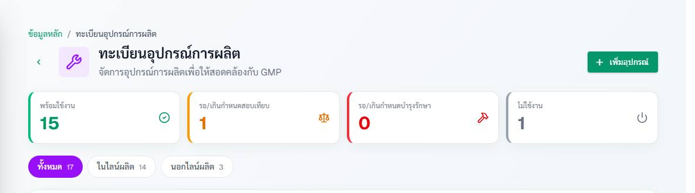
GMP-01 นำ SOP เข้าระบบควบคุมเอกสาร แนบไฟล์ ส่งขออนุมัติ ลองไม่อนุมัติโดยไม่ใส่เหตุผล แล้วอนุมัติ
ระบบGMP
เจ้าหน้าที่ QA (เจ้าหน้าที่ QA) กด "สร้างเอกสารใหม่" → หน้าต่าง: "ชื่อเอกสาร *" · "ประเภทเอกสาร *" = SOP - Standard Operating Procedure · "ระยะเวลาจัดเก็บ (ปี)" 5 · "เนื้อหาเริ่มต้น" 5 ขั้นตอน (ไม่มีข้อความแดงเรื่องสิทธิ์)

"อัปโหลดเอกสาร" เลือกไฟล์ ซ้อม-SOP-โต๊ะชั่ง.pdf (2.1 KB)
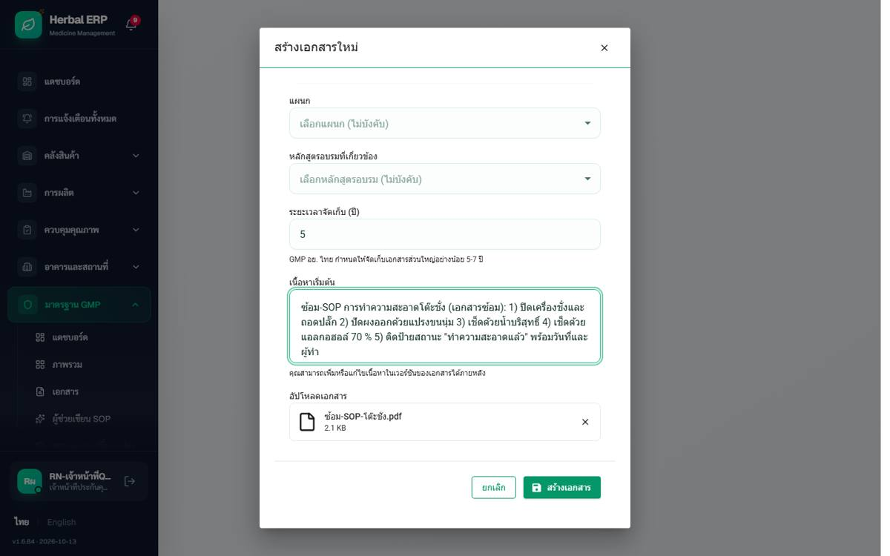
กด "สร้างเอกสาร" → เลขที่ SOP-2610-0001 · เวอร์ชัน 1.0 "ร่าง" · มีไฟล์ให้ดาวน์โหลด/เปิด

กด "ส่งเพื่อขออนุมัติ" → "ผู้อนุมัติ *" (แสดงเฉพาะผู้มีสิทธิ์ — ไม่มีชื่อผู้จัดทำ) เลือก RN-หัวหน้าQA ผู้ทดสอบ กด "ส่ง" → เวอร์ชัน 1.0 "รอการอนุมัติ"
หัวหน้า QA (หัวหน้า QA) เปิด มาตรฐาน GMP › เอกสาร เห็นกล่อง "เอกสารรอการอนุมัติของคุณ 1" คลิกเข้าเอกสาร กด "พิจารณาอนุมัติ"
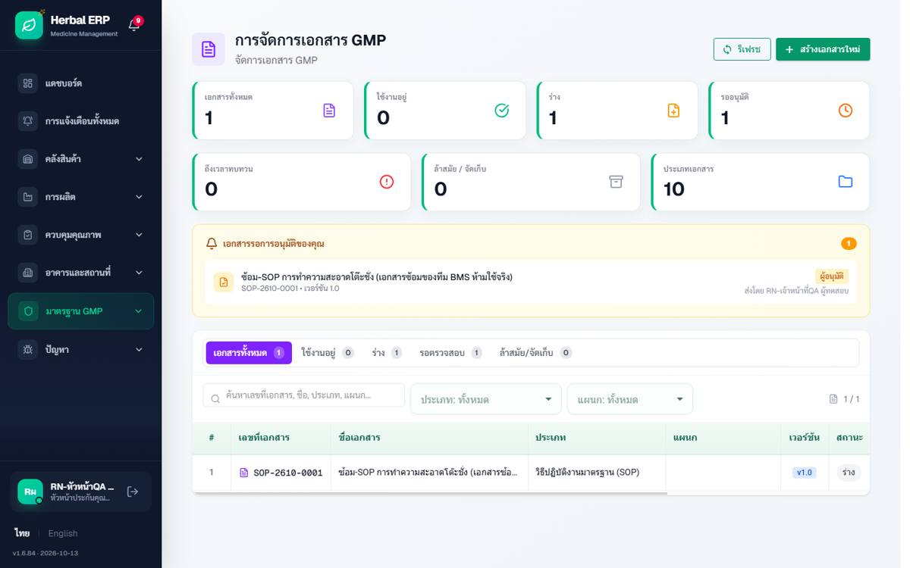
กด "ไม่อนุมัติ" → หน้าต่าง "ยืนยันการไม่อนุมัติ" ใส่รหัสผ่านแต่ไม่ใส่เหตุผล กด "ไม่อนุมัติ" → ขึ้น "กรุณาระบุเหตุผลการไม่อนุมัติ" ไม่ยอมบันทึก → กด "ยกเลิก"

กด "อนุมัติ" → "ลงนามอนุมัติเอกสาร" ใส่ "ความเห็น (ไม่บังคับ)" และรหัสผ่าน กด "ลงนามอนุมัติ"
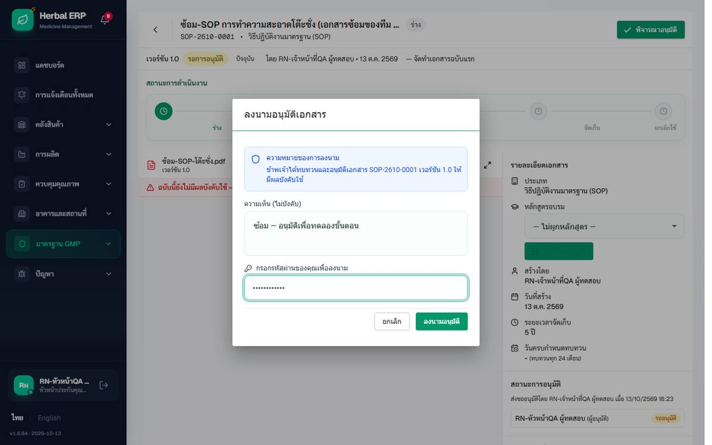
เอกสารสถานะ "ใช้งาน" · เวอร์ชัน 1.0 "อนุมัติแล้ว" · มีผลบังคับใช้ 13/10/2569

GMP-05 รับเรื่องข้อร้องเรียน (ระบุผลิตภัณฑ์และล็อต) ส่ง QC สอบสวน แล้วสร้าง CAPA
ระบบGMP
เจ้าหน้าที่ QA (เจ้าหน้าที่ QA) กด "บันทึกข้อร้องเรียนใหม่" → หน้าต่าง "ลงทะเบียนข้อร้องเรียนใหม่": วันที่รับเรื่อง 13/10/2569 · แหล่งที่มา ลูกค้า · ชื่อลูกค้า (พิมพ์เอง) · ข้อมูลติดต่อ · ผลิตภัณฑ์ CAP1800 · เลขล็อต ซ้อม-L01 · หมวดหมู่ บรรจุภัณฑ์ · ความรุนแรง เล็กน้อย · รายละเอียด "ฝาขวดปิดไม่สนิท 2 ขวด แคปซูลชื้นจับตัว"
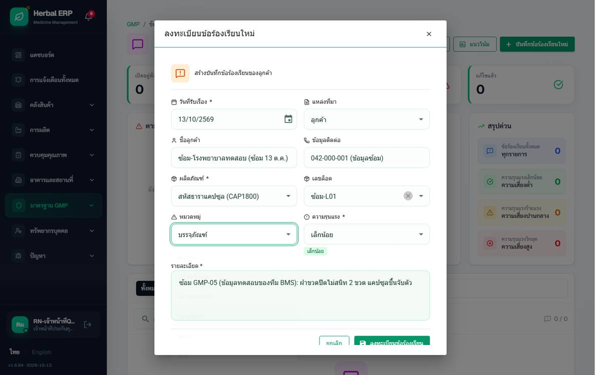
กด "ลงทะเบียนข้อร้องเรียน" → COMP-2610-0001 สถานะ "รับเรื่องแล้ว"
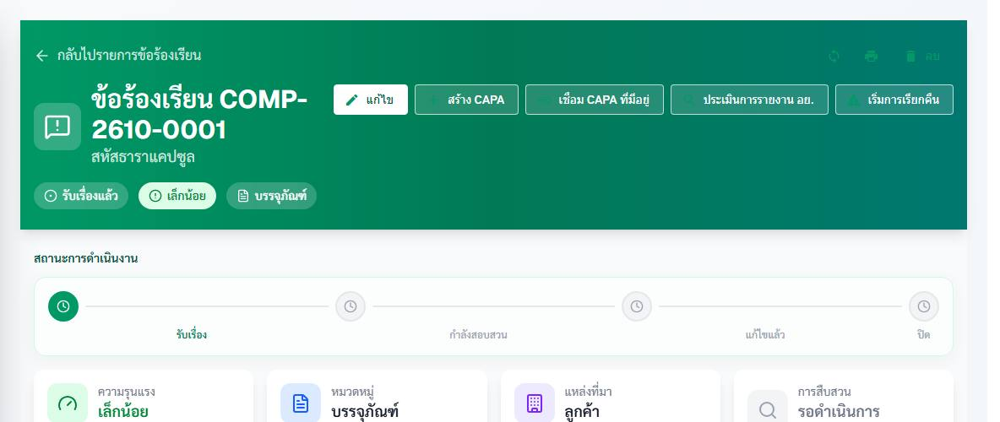
แท็บ "การสืบสวน" ส่วน "ส่งต่อให้ฝ่าย QC" เลือก "มอบหมายผู้ตรวจสอบ *" = RN-หัวหน้าQC ผู้ทดสอบ กด "ส่งต่อให้ฝ่าย QC" → สถานะ "กำลังตรวจสอบ"

หัวหน้า QC (หัวหน้า QC) เปิดข้อร้องเรียน แท็บ "การสืบสวน" เห็นฟอร์ม กรอก การทบทวนบันทึกการผลิตล็อต · ผลการทดสอบตัวอย่างเก็บกัน · สาเหตุที่แท้จริง * · ข้อสรุป * · ข้อเสนอแนะ กด "เสร็จสิ้นการสอบสวน" → สถานะ "แก้ไขแล้ว" การสืบสวน "เสร็จสิ้น"
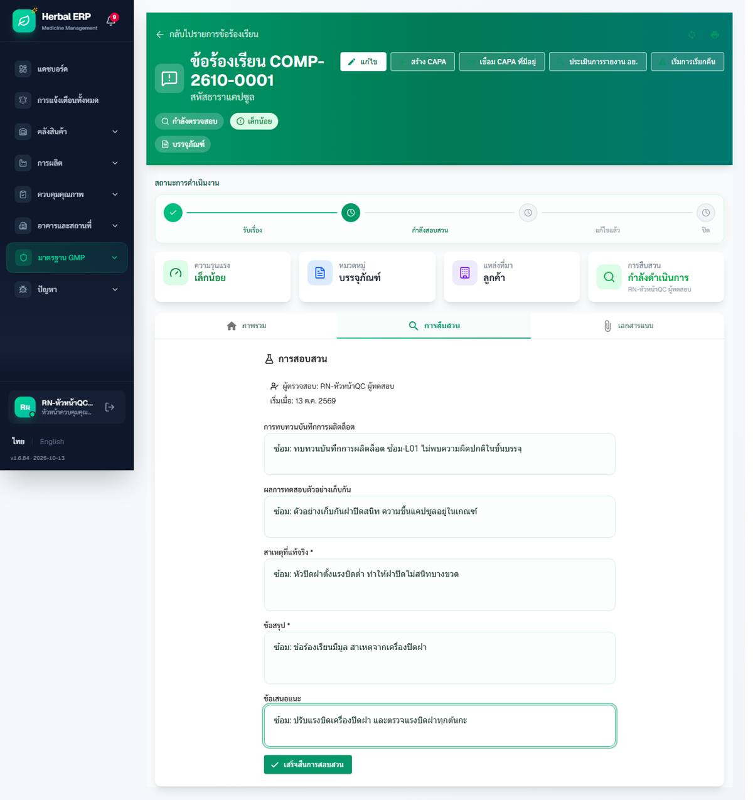
เจ้าหน้าที่ QA กด "สร้าง CAPA" → หน้าต่าง "สร้าง CAPA จากข้อร้องเรียน" ป้าย "เชื่อมโยงกับ: COMP-2610-0001" หัวข้อเติมให้ "CAPA สำหรับ COMP-2610-0001" · ประเภท ทั้งสองอย่าง · ความสำคัญ ปานกลาง · ผู้รับผิดชอบ RN-หัวหน้าผลิต · วันที่กำหนดเสร็จ 13/11/2569 (เลือกจากปฏิทิน) · 5-Why · กด "สร้าง CAPA" → CAPA-2610-0001 สถานะ "เปิด"
กลับหน้าข้อร้องเรียน "เอกสารที่เกี่ยวข้อง" มีการ์ด "CAPA: CAPA-2610-0001" · ปุ่ม "สร้าง CAPA" หายไป · ลองเปิดหน้าสร้าง CAPA ของข้อร้องเรียนนี้อีกครั้งแล้วกดสร้าง → "ข้อร้องเรียนนี้เชื่อมโยงกับ CAPA แล้ว"
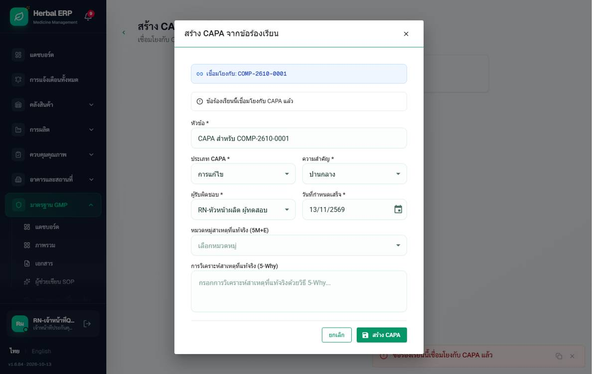
HR-01 สร้างโครงสร้างหน่วยงาน (ฝ่าย แผนก) ระบุหน่วยงานสำคัญต่อ GMP และสร้างตำแหน่งงาน
ระบบทรัพยากรบุคคล
เจ้าหน้าที่ HR (เจ้าหน้าที่ HR) แท็บ "มุมมองต้นไม้"
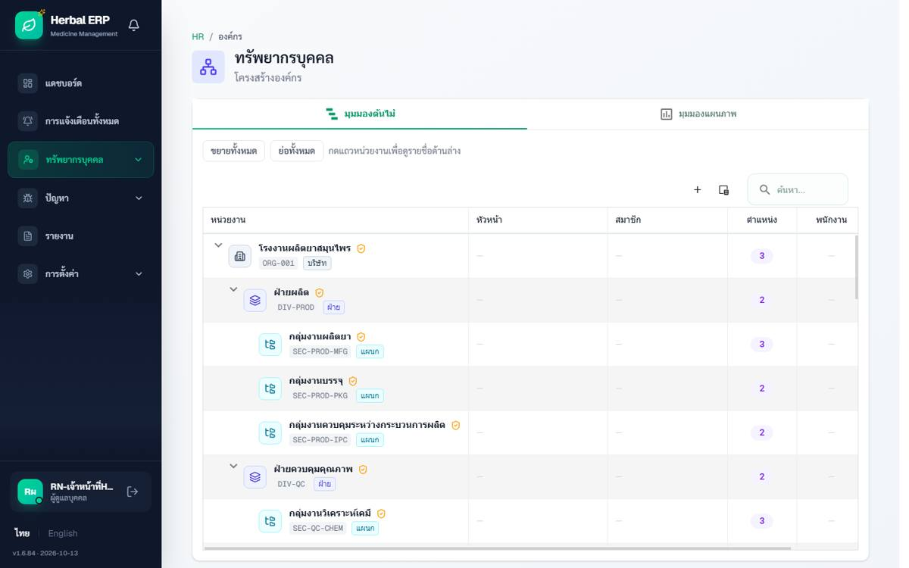
แถว ORG-001 โรงงานผลิตยาสมุนไพร กด "+" (เพิ่ม) → หน้าต่าง "หน่วยงาน": "หน่วยงาน *" ซ้อม-ฝ่ายผลิต · "ประเภท" = ฝ่าย (รหัสเปลี่ยนเป็น DIV-001 เอง) · "หน่วยงานหลัก" ORG-001 · ติ๊ก "GMP" · "เริ่มใช้งาน" 13/10/2569 · กด "บันทึก" → "สร้างหน่วยงานสำเร็จ"

ฝ่ายที่ 2 ซ้อม-ฝ่ายประกันคุณภาพ → DIV-002
แถวแต่ละฝ่าย กด "+" เพิ่ม "แผนก": ซ้อม-แผนกผลิตยาแคปซูล (DEPT-001, GMP) · ซ้อม-แผนกคลังสินค้า (DEPT-003, ไม่ติ๊ก GMP) ใต้ DIV-001 · ซ้อม-แผนกควบคุมคุณภาพ (DEPT-002, GMP) ใต้ DIV-002
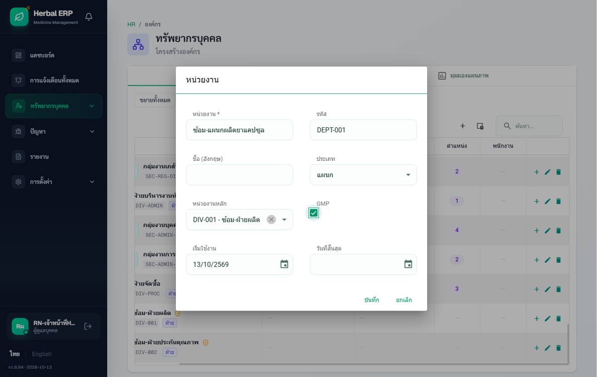

ทรัพยากรบุคคล › ตำแหน่ง กด "เพิ่มตำแหน่ง" กรอก "รหัสตำแหน่ง *" "ระดับตำแหน่ง" "ชื่อตำแหน่ง (ภาษาไทย) *" เลือก "หน่วยงาน *" (กล่องแบบต้นไม้ — ต้องคลิกที่แถวหน่วยงาน) ติ๊ก "ตำแหน่ง GMP Critical" กด "บันทึก" → "สร้างตำแหน่งสำเร็จ" × 3: ซ้อม-POS-01 Manager ซ้อม-หัวหน้าฝ่ายผลิต (ซ้อม-ฝ่ายผลิต, GMP) · ซ้อม-POS-02 Staff ซ้อม-พนักงานผลิตยาแคปซูล (ซ้อม-แผนกผลิตยาแคปซูล, ไม่ติ๊ก) · ซ้อม-POS-03 Staff ซ้อม-ผู้วิเคราะห์ QC (ซ้อม-แผนกควบคุมคุณภาพ, GMP)
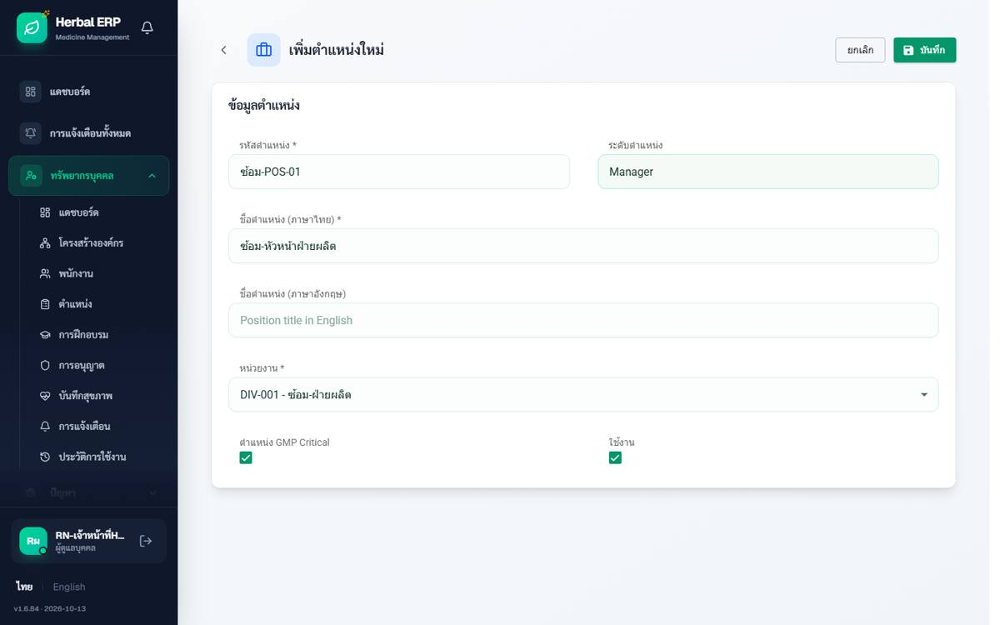
กลับโครงสร้างองค์กร คอลัมน์ "ตำแหน่ง": ซ้อม-ฝ่ายผลิต 1 · ซ้อม-แผนกผลิตยาแคปซูล 1 · ซ้อม-แผนกควบคุมคุณภาพ 1
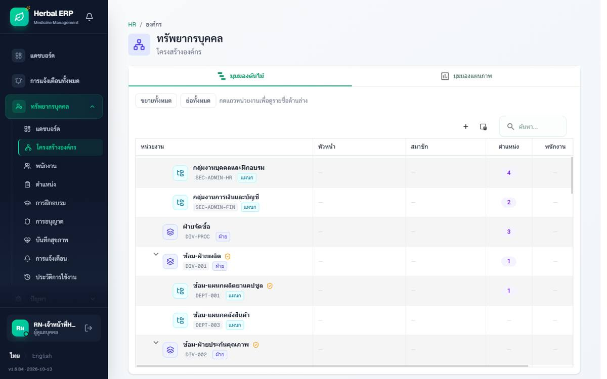
แท็บ "มุมมองแผนภาพ" มีกล่องหน่วยงานซ้อมอยู่ในแผนภาพ

หน้าตำแหน่ง การ์ด "GMP CRITICAL 65" (รวม 2 ตำแหน่งซ้อม) · "ตัวกรอง" ติ๊ก "เฉพาะ GMP Critical" เหลือ 65 รายการ มี ซ้อม-POS-01 และ ซ้อม-POS-03 · ไม่มี ซ้อม-POS-02


HR-02 ลงทะเบียนพนักงาน 3 คน พร้อมรูป ตำแหน่ง หน่วยงาน วันเริ่มงาน · บันทึกพนักงานที่ผูกบัญชีผู้ใช้เป็นพ้นสภาพ
ระบบทรัพยากรบุคคล
เจ้าหน้าที่ HR กด "เพิ่มพนักงาน" — "รหัสพนักงาน *" เติม EMP-001 ให้ · กรอก ชื่อ ซ้อม-มานะ / นามสกุล ทดสอบผลิต / ชื่อเล่น มานะ · "หน่วยงาน" ซ้อม-แผนกผลิตยาแคปซูล (กล่องต้นไม้) · "ตำแหน่ง" ซ้อม-พนักงานผลิตยาแคปซูล · "วันที่เริ่มงาน *" 01/06/2565 (ต้องกดปฏิทิน → กดหัวเดือนเพื่อเลือกปี/เดือน) · กด "บันทึก" (ปุ่มอยู่บนสุดของหน้า) → "เพิ่มพนักงานใหม่เรียบร้อย"

ทำซ้ำ: ซ้อม-มานี (EMP-002 · ซ้อม-แผนกควบคุมคุณภาพ / ซ้อม-ผู้วิเคราะห์ QC · 01/10/2568) · ซ้อม-ปิติ (EMP-003 · ซ้อม-ฝ่ายผลิต / ซ้อม-หัวหน้าฝ่ายผลิต · 01/09/2569)
กด "อัปโหลดรูป" เลือกไฟล์ JPEG/PNG รูปจะขึ้นในหน้าข้อมูลพนักงานทันที
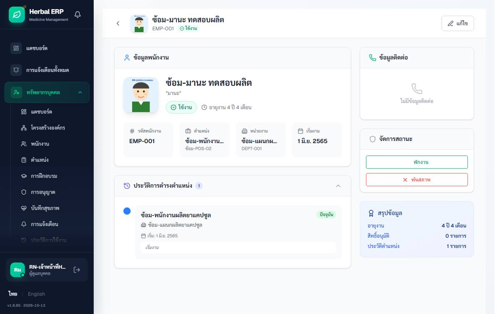
อายุงานถูก: EMP-001 "อายุงาน 4 ปี 4 เดือน" · EMP-002 "1 ปี" · EMP-003 "1 เดือน" (หัวโปรไฟล์และคอลัมน์ "วันเริ่มงาน / อายุงาน")
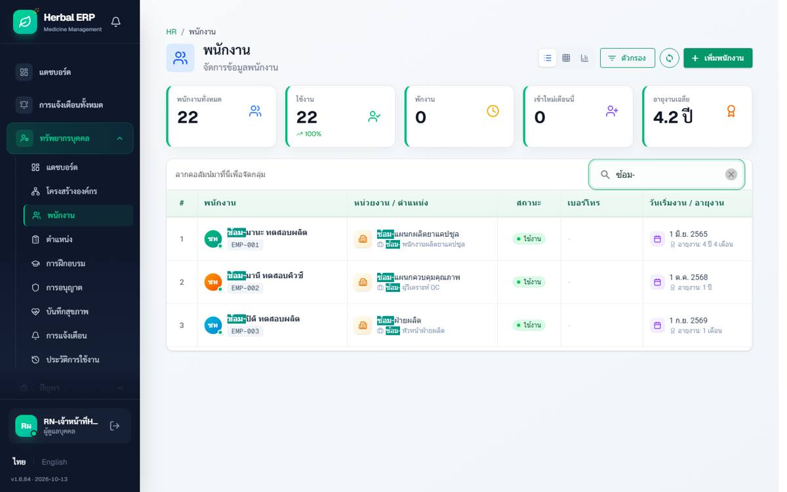
เปิด RN-E19 (RN-ทดสอบพ้นสภาพ) การ์ด "จัดการสถานะ" กด "พ้นสภาพ" → หน้าต่าง "ยืนยันพ้นสภาพพนักงาน" มีข้อความ "บัญชีผู้ใช้ที่ผูกกับพนักงานนี้จะถูกปิดใช้งานทันที …" และ "สิทธิ์อนุมัติที่ยังมีผลของพนักงานนี้จะถูกยกเลิก …" → กด "ยกเลิก" (RN-E19 ยัง "ใช้งาน")
ทดลองบันทึกจริงกับ EMP-003 ซ้อม-ปิติ (ไม่ผูกบัญชี — หน้าต่างขึ้น "พนักงานนี้ไม่ได้ผูกกับบัญชีผู้ใช้") ใส่วันที่พ้นสภาพ 13/10/2569 กด "บันทึกพ้นสภาพ" → "อัปเดตสถานะพนักงานเรียบร้อย" สถานะ "พ้นสภาพ"
ส่วน "บัญชีที่ผูกไว้เข้าระบบไม่ได้" และแดชบอร์ด HR "งานที่ต้องทำ" ไม่ได้ทดลอง (ต้องใช้ RN-E19/พนักงานทดสอบพ้นสภาพ ของพรุ่งนี้ และ เจ้าหน้าที่ HR สร้างบัญชีผู้ใช้ใหม่ไม่ได้)
SAL-02 ใบเสนอราคา พิมพ์ ตอบรับ แปลงเป็นใบสั่งขายและยืนยัน ลองแปลงซ้ำ
ระบบขาย
พนักงานขาย (พนักงานขาย) ขาย › ใบเสนอราคา กด "สร้างใบเสนอราคา"
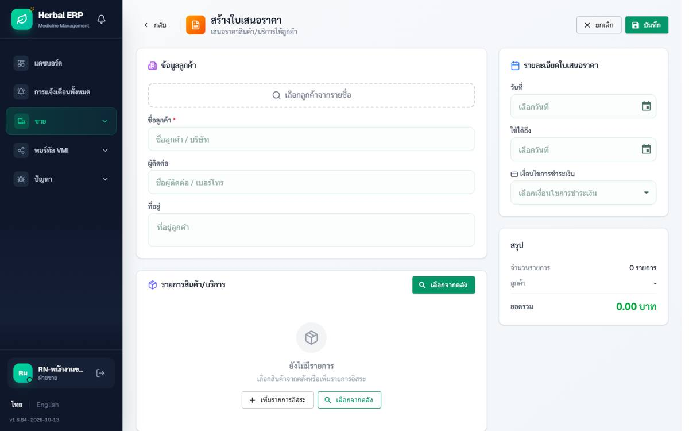
"เลือกลูกค้าจากรายชื่อ" → CUS001 ซ้อม-โรงพยาบาลทดสอบ → เงื่อนไขชำระเติม "ชำระภายใน 30 วัน"
"เลือกจากคลัง" ลอง RN-FG-001 → ราคา 250.00 เติมจากทะเบียนสินค้าให้เอง (แล้วกดลบรายการนี้ออก) · เลือก CAP1800 ใส่จำนวน 100 ราคา 250 (สินค้านี้ไม่มีราคาขายในทะเบียน ต้องพิมพ์เอง)
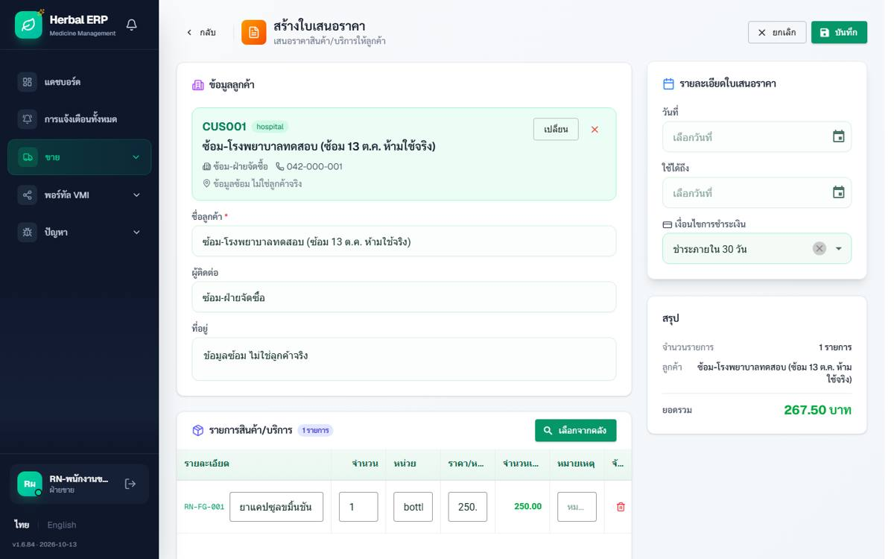
ฐานราคา = ก่อน VAT · ยอดก่อน VAT 25,000 · VAT 7% 1,750 · รวม 26,750 · ใส่ "วันที่" 13/10/2569 และ "ใช้ได้ถึง" 12/11/2569 โดยกดไอคอนปฏิทิน · กด "บันทึก" → "สร้างใบเสนอราคาสำเร็จ QT2026-0001"

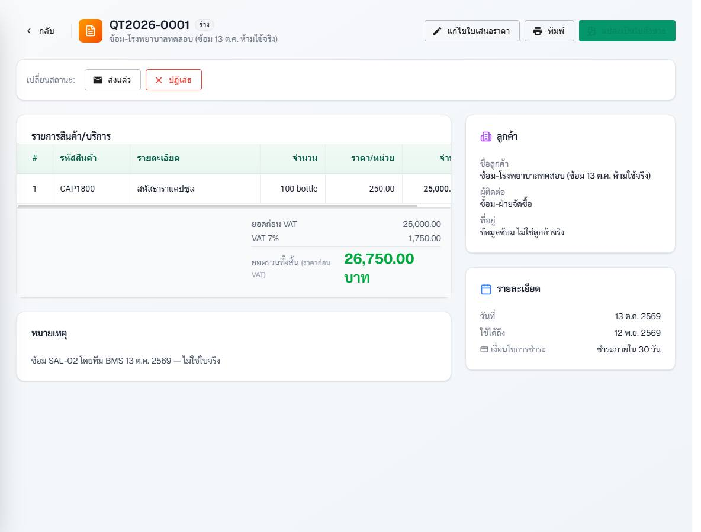
ครั้งแรกพิมพ์วันที่ลงช่อง "วันที่" เอง แล้วกด Tab → ทั้งหน้าขึ้น "เกิดข้อผิดพลาด ขออภัย เกิดข้อผิดพลาดที่ไม่คาดคิด" ข้อมูลที่กรอกหายหมด (ทำซ้ำได้: ช่องกลายเป็น 13/10/31129 แล้วพัง) ต้องเริ่มกรอกใหม่

กด "พิมพ์" → ใบพิมพ์ 1 หน้า หัว "ใบเสนอราคา / Quotation" (หัวกระดาษยังเป็น ยูเอทีจำกัด)

ปุ่ม "แปลงเป็นใบสั่งขาย" เป็นสีจาง กดไม่ได้ ชี้แล้วขึ้น "ต้องกด "ตอบรับ" ก่อนจึงจะแปลงเป็นใบสั่งขายได้"

"เปลี่ยนสถานะ:" กด "ส่งแล้ว" → "อัปเดตสถานะแล้ว ส่งแล้ว" แล้วกด "ตอบรับ"
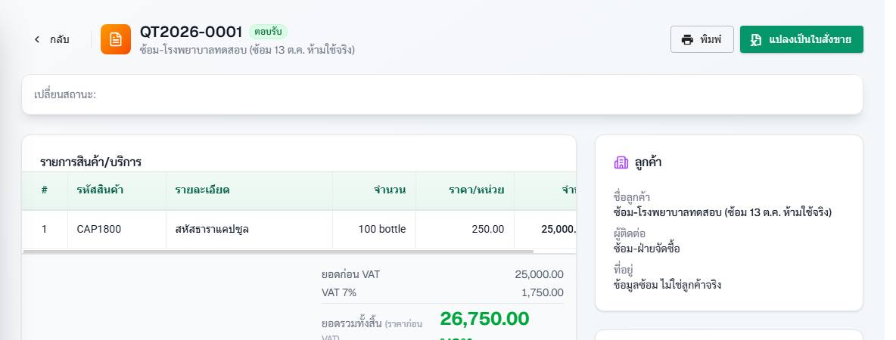
กด "แปลงเป็นใบสั่งขาย" → เปิด SO-202610-0003 สถานะ "ร่าง" ยอด 26,750 ราคา 250 เงื่อนไข "ชำระภายใน 30 วัน" · กด "ยืนยันคำสั่งซื้อ" → "ยืนยันคำสั่งซื้อแล้ว" สถานะ "ยืนยันแล้ว"
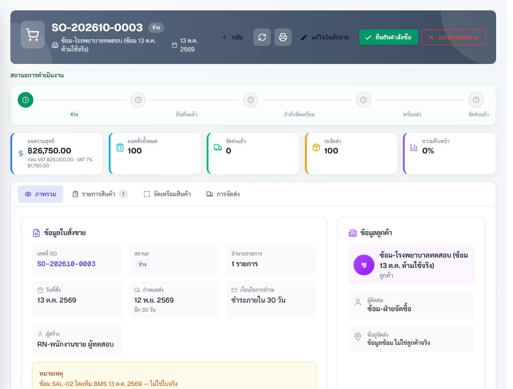

กลับ QT2026-0001 สถานะ "แปลงแล้ว" ปุ่มแปลงกดไม่ได้ ชี้แล้วขึ้น "ใบเสนอราคานี้ถูกแปลงแล้ว"

SAL-05 จัดส่งบางส่วนจากใบสั่งขาย เลือกล็อตตาม FEFO ออกใบส่งของแล้วพิมพ์
ระบบขาย
พนักงานคลัง เปิด SO-202610-0003 แท็บ "จัดเตรียมสินค้า (FEFO)" — สต็อกพร้อมใช้ 200 · ล็อตแนะนำ ซ้อม-L01 (31 มี.ค. 2571) ตามด้วย ซ้อม-L02
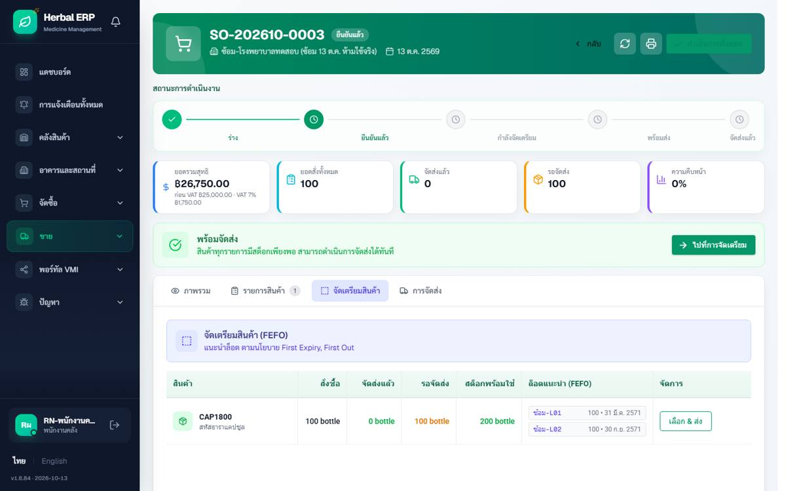
กด "เลือก & ส่ง" → ช่อง "เลือกล็อต (FEFO)" ตั้งเป็น ซ้อม-L01 · รายการล็อตมีแค่ ซ้อม-L01, ซ้อม-L02 (ล็อตกักกันไม่อยู่ในรายการ)

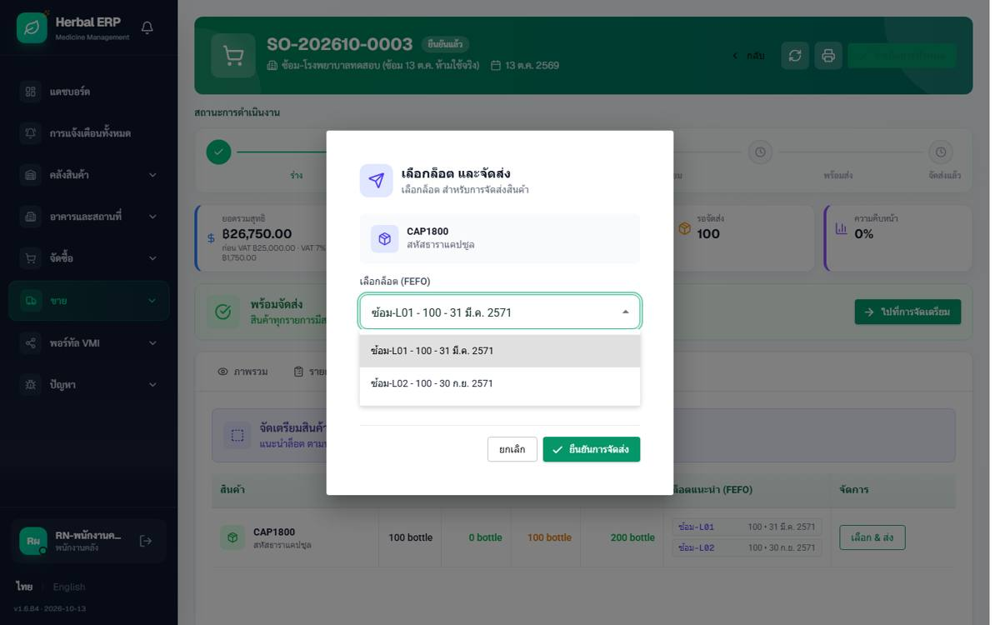
ใส่ "จำนวนที่จะจัดส่ง" 120 → ช่องกลับเป็น 100 (ส่งเกินค้างส่งไม่ได้) แล้วแก้เป็น 60
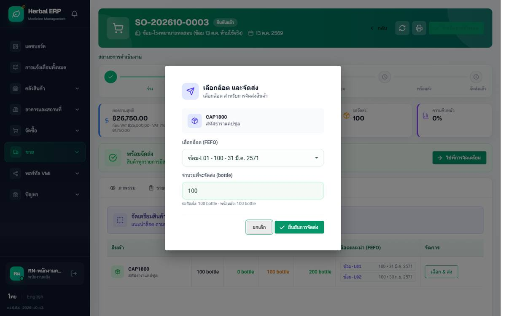
กด "ยืนยันการจัดส่ง" → "ส่งของแล้ว ใบส่งของ DL-202610-0003 — สร้างใบแจ้งหนี้ฉบับร่างแล้ว รออนุมัติ (AR-202610-000003)"

ใบสั่งขายเป็น "กำลังดำเนินการ" จัดส่งแล้ว 60 รอจัดส่ง 40 · รายการ "บางส่วน" 60/100 · แท็บ "การจัดส่ง" DL-202610-0003 ล็อต ซ้อม-L01 รายการบัญชี SV-202610-000005 ใบแจ้งหนี้ AR-202610-000003
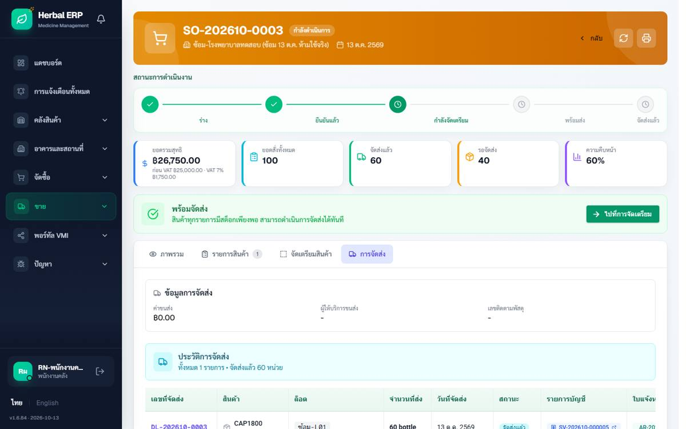
ขาย › ใบส่งของ กดไอคอน "พิมพ์" ของ DL-202610-0003 → ใบพิมพ์ 1 หน้า หัว "ใบส่งของ / Delivery Note" มีเลขล็อตและวันหมดอายุ ช่องผู้ส่ง/ผู้รับ (หัวกระดาษยังเป็น ยูเอทีจำกัด)

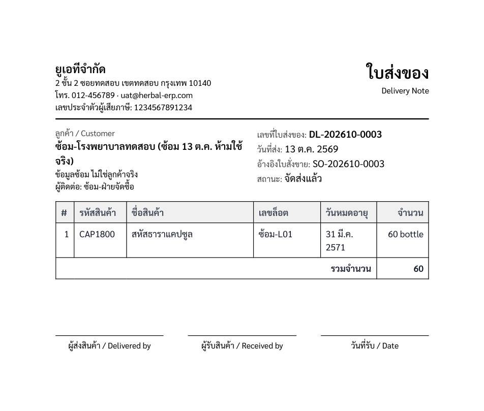
คลังสินค้า › ล็อต ค้น "ซ้อม-L0": ซ้อม-L01 เหลือ 40 ขวด · ซ้อม-L02 100
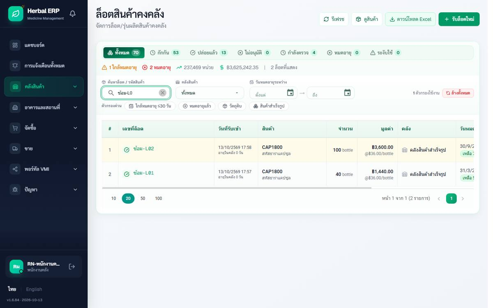
ACC-02 ใบแจ้งหนี้ผู้ขาย จับคู่ 3 ทาง ผู้บันทึกลองอนุมัติเอง ผู้อนุมัติอนุมัติ
ระบบบัญชี
เจ้าหน้าที่การเงิน (เจ้าหน้าที่การเงิน) บัญชี › บัญชีเจ้าหนี้

พนักงานคลังกด "รับสินค้า" ตามใบสั่งซื้อ (โจทย์ PUR-05) แล้วระบบสร้างใบแจ้งหนี้ฉบับร่างให้ฝ่ายบัญชี และขึ้นข้อความแจ้งเลขที่ เช่น "ระบบสร้างใบแจ้งหนี้ฉบับร่าง AP-… ให้ฝ่ายบัญชีแล้ว"
เจ้าหน้าที่การเงินเปิด บัญชี › บัญชีเจ้าหนี้ › ใบแจ้งหนี้ผู้ขาย เห็นใบร่างที่มีป้าย "จากการรับสินค้า · รอเลขที่ใบกำกับภาษีผู้ขาย" กดแก้ไข ใส่เลขที่และวันที่ใบกำกับภาษีของผู้ขาย แล้วบันทึก

ไอคอน "ดูผลจับคู่ 3 ทาง" → สั่ง 50 · รับ 50 · แจ้งหนี้ 50 · ราคา 180 · ผล "ตรงกัน"

เจ้าหน้าที่การเงิน กด "อนุมัติ" ใบของตัวเอง → "ใช่" → "ผู้บันทึกใบแจ้งหนี้ ซ้อม-INV-6910-001 อนุมัติเองไม่ได้ — ต้องให้ผู้อื่นที่มีสิทธิ์อนุมัติเป็นผู้อนุมัติ"
ใบที่ 2 ซ้อม-INV-6910-002 ไพลผง จำนวน 55 (ได้รับ 40 เพราะรับครบแล้วในขั้นที่ 2 จึงใส่ 55 เพื่อให้เกินที่รับ 15 เหมือนโจทย์) → ระบบยอมบันทึก · "ดูผลจับคู่ 3 ทาง" ผล "จำนวนแจ้งหนี้เกินที่รับ 15"

"ดูรายการผิดปกติทั้งหมด" → บัญชี › รายการผิดปกติจากการจับคู่: ซ้อม-INV-6910-002 "ปริมาณเกิน 15 (37.50%)" รอตรวจสอบ
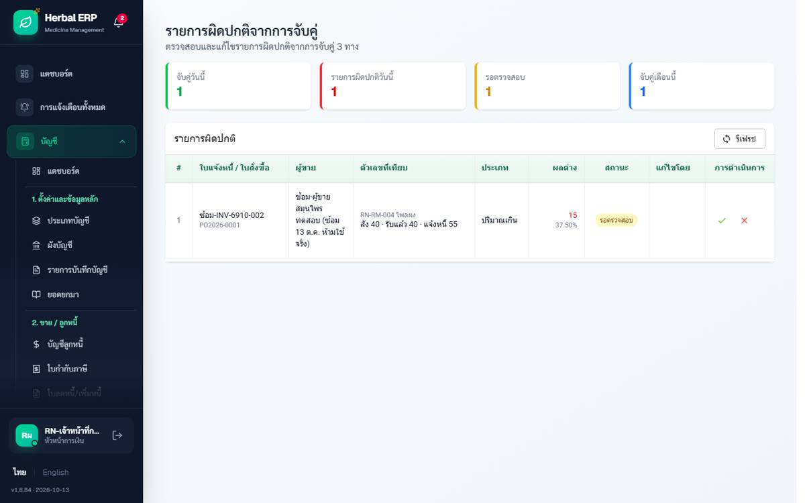
หัวหน้าบัญชี (หัวหน้าบัญชี) กด "อนุมัติ" ใบที่ 1 → หน้าต่าง "ยืนยันการอนุมัติ" กด "ใช่" → "อนุมัติใบแจ้งหนี้และบันทึกรายการบัญชีแล้ว" สถานะ "ผ่านแล้ว" ใบสำคัญ PU-202610-000002
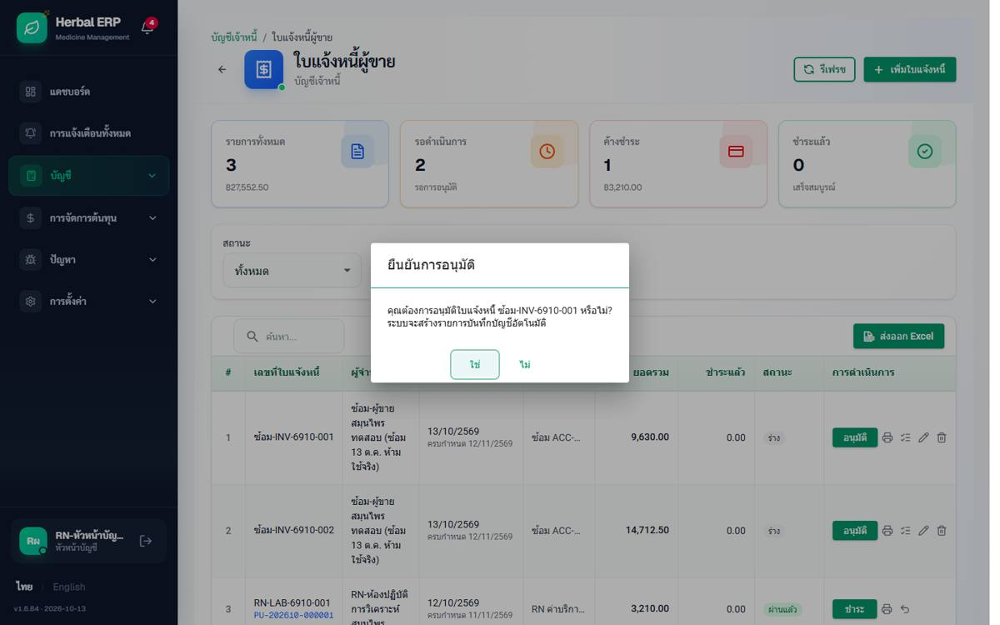

บัญชี › รายการบันทึกบัญชี ค้น PU-202610-000002: Dr 2113 9,000.00 · Dr 1142 630.00 / Cr 2111 9,630.00

หัวหน้าบัญชี กด "อนุมัติ" ใบที่ 2 → "อนุมัติใบแจ้งหนี้ ซ้อม-INV-6910-002 ไม่ได้ — มีรายการผิดปกติจากการจับคู่ 3 ทางรอตรวจสอบ 1 รายการ (จำนวนเกินที่รับ) …" (ปล่อยค้างไว้ตามโจทย์)
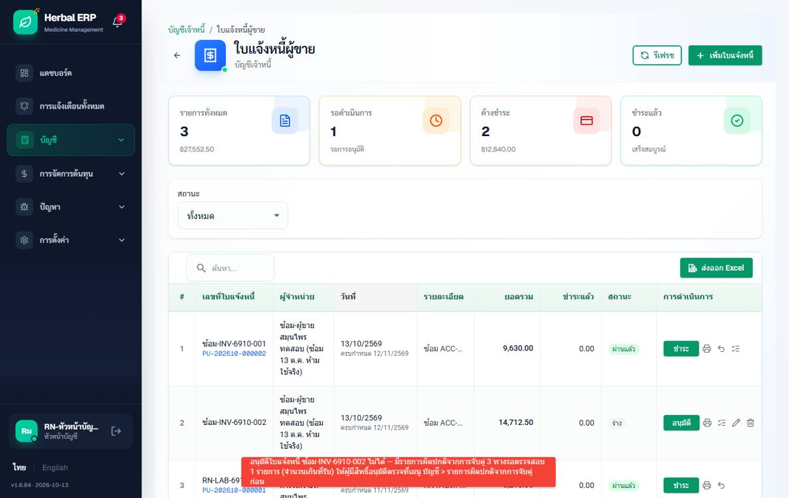
ACC-04 ยืนยันใบแจ้งหนี้ลูกหนี้ พิมพ์ใบกำกับภาษี รับชำระบางส่วน พิมพ์ใบเสร็จ ตรวจอายุลูกหนี้
ระบบบัญชี
หัวหน้าบัญชี (หัวหน้าบัญชี) บัญชี › บัญชีลูกหนี้ › ใบแจ้งหนี้ลูกหนี้ — AR-202610-000003 ซ้อม-โรงพยาบาลทดสอบ 16,050.00 "ร่าง"

กด "อนุมัติ" → หน้าต่าง "ยืนยันใบแจ้งหนี้" ("ระบบจะออกเลขที่ใบกำกับภาษีถัดไปเมื่อยืนยัน …") กด "ใช่" → "อนุมัติแล้ว — ออกใบกำกับภาษีเลขที่ T-202610-000003 และบันทึกรายการบัญชีแล้ว" สถานะ "ผ่านแล้ว" ใบสำคัญ SV-202610-000006

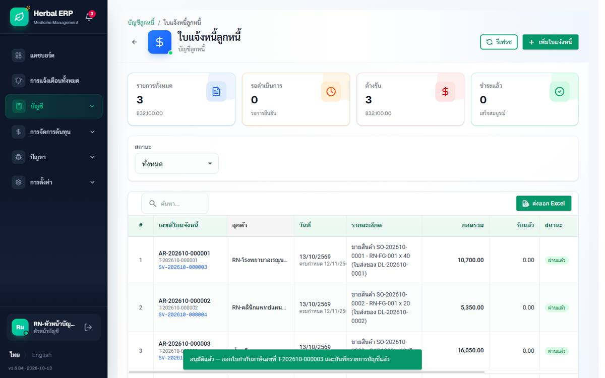
ไอคอน "พิมพ์ใบกำกับภาษี" → แท็บใหม่ "ตัวอย่างก่อนพิมพ์" หัว "ใบกำกับภาษี / ใบแจ้งหนี้" ต้นฉบับ (Original) + สำเนา (Copy) · มูลค่าก่อนภาษี 15,000.00 · ภาษี 7% 1,050.00 · รวม 16,050.00 · "หนึ่งหมื่นหกพันห้าสิบบาทถ้วน" · กด "พิมพ์"
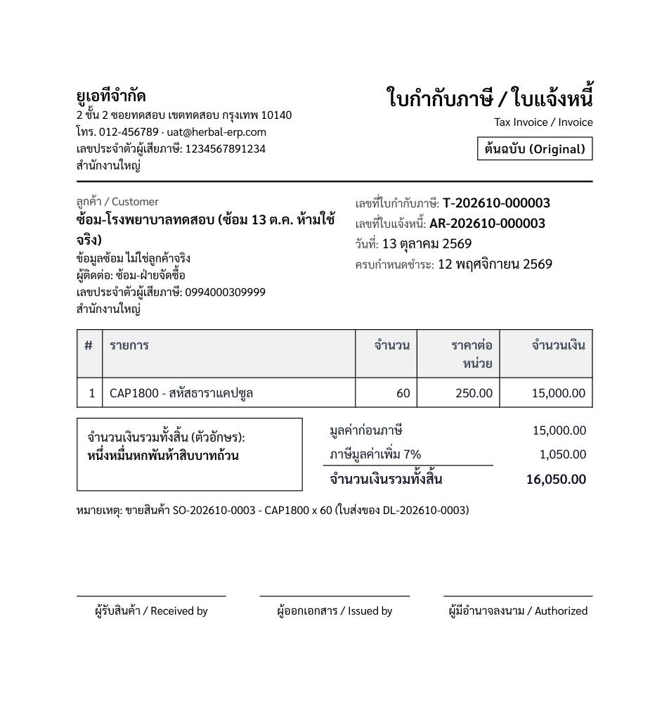
กดพิมพ์อีกครั้ง → "ต้นฉบับพิมพ์ไปแล้ว — ครั้งนี้พิมพ์เป็นสำเนา (ครั้งที่ 2)" มีแต่ "สำเนา (Copy)"

เจ้าหน้าที่การเงิน (เจ้าหน้าที่การเงิน) กด "รับชำระ" → วันที่ 13/10/2569 · บัญชีรับเงิน 1112 · วิธี โอนเงิน · เลขอ้างอิง ซ้อม-RCV-001 · จำนวนเงิน 10,000 · กด "รับชำระ" → "รับชำระเงินสำเร็จ (ใบเสร็จ RC-202610-000001)" · ใบแจ้งหนี้ "บางส่วน" ค้าง 6,050.00

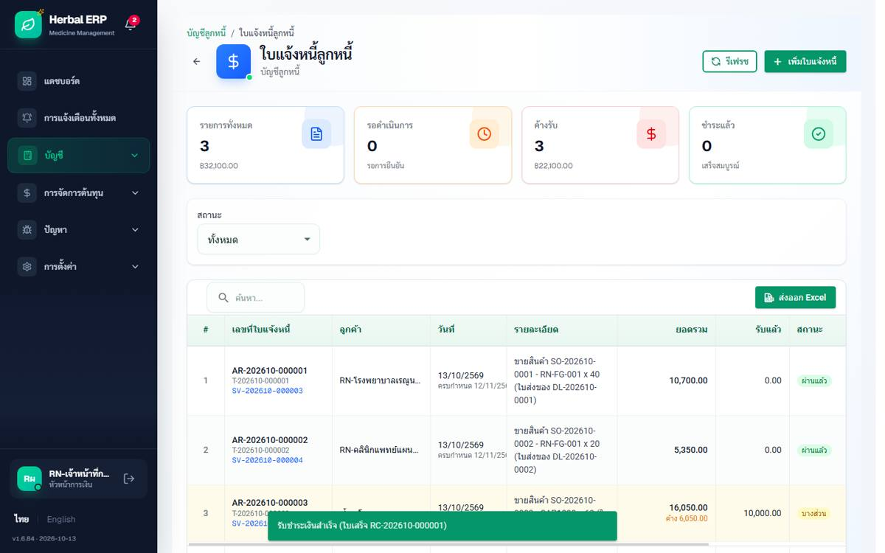
บัญชี › รับชำระหนี้ RC-202610-000001 (RV-202610-000001) ไอคอน "พิมพ์ใบเสร็จ" → หัว "ใบเสร็จรับเงิน / Receipt" "จำนวนเงินที่รับ (ตัวอักษร): หนึ่งหมื่นบาทถ้วน"


รายงานอายุหนี้ลูกหนี้ กล่อง "เทียบยอดกับบัญชีแยกประเภท (บัญชีคุม)" "✓ ตรงกัน" 22,100.00 = 1121 22,100.00 ผลต่าง 0.00 (16,050 ของที่เตรียม + 6,050 ของซ้อม)
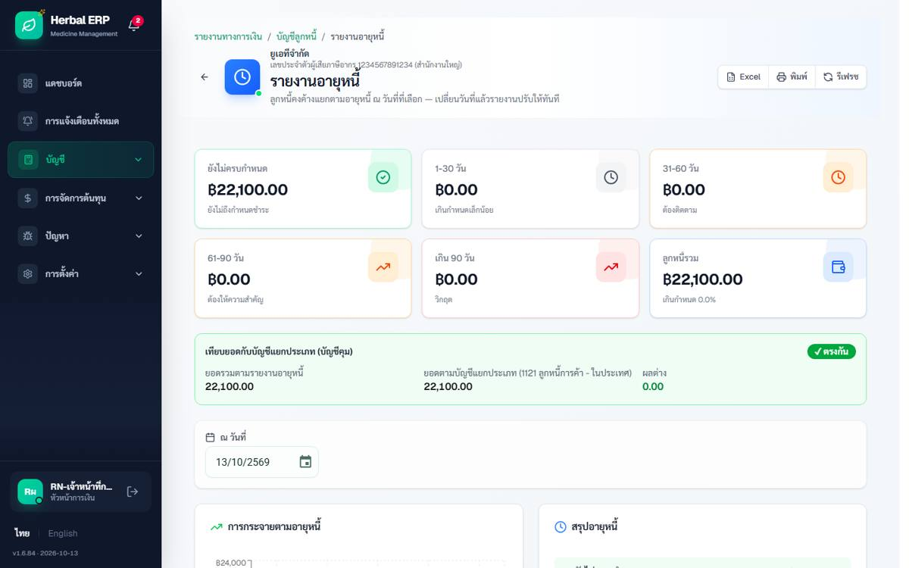
CST-01 กำหนดต้นทุนมาตรฐานของผลิตภัณฑ์ 1 ตัว (วัตถุดิบ ค่าแรง โสหุ้ย ชั่วโมงและอัตรามาตรฐาน)
ระบบต้นทุน
บัญชีต้นทุน (บัญชีต้นทุน) เปิด บัญชี › ต้นทุนมาตรฐาน (แถวเดิมในระบบหลายแถวไม่มีรหัส/ชื่อสินค้า)

กด "เพิ่มต้นทุน" → "สินค้า *" CAP1800 · "วันที่มีผล *" 13/10/2569 · "ค่าวัตถุดิบ (บาท/หน่วย)" 30
"ศูนย์งาน" RN-WC-01 → "อัตราค่าแรงมาตรฐาน (บาท/ชม.)" เติม 60.00 ให้ · "ชั่วโมงมาตรฐานต่อหน่วย" 0.05 → "ค่าแรง (บาท/หน่วย)" 3.00 และ "ค่าโสหุ้ย (บาท/หน่วย)" 3.00 คิดให้เอง (0.05 × 60 และ 0.05 × (40 + 20)) · ใส่หมายเหตุ · "ใช้เป็นต้นทุนปัจจุบัน" ติ๊กไว้แล้ว
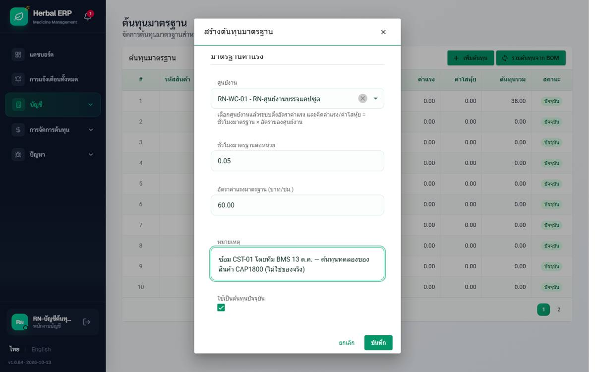
กด "บันทึก" → "สร้างต้นทุนมาตรฐานสำเร็จ" · แถวใหม่ CAP1800 13/10/2569 วัตถุดิบ 30.00 · ค่าแรง 3.00 · ค่าโสหุ้ย 3.00 · ต้นทุนรวม 36.00 · "ปัจจุบัน"
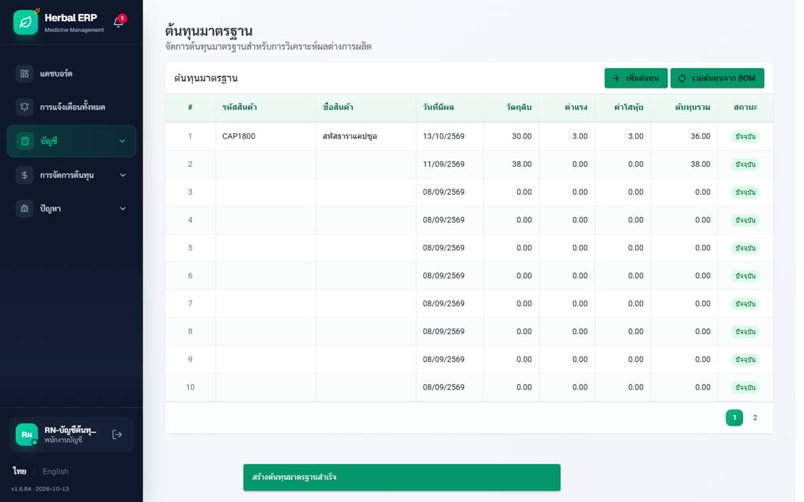
เทียบรายองค์ประกอบ: 30.00 (วัตถุดิบจากสูตร) + 3.00 (ค่าแรง) + 3.00 (โสหุ้ย 40 + เครื่องจักร 20) = 36.00 ตรงกับตารางในโจทย์